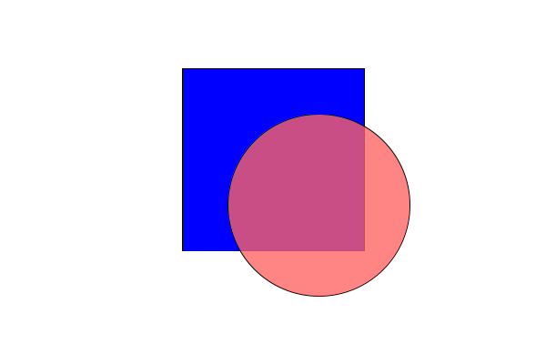

Gann Graphics 1.3 API
A framework for easy access to Java AWT and Swing drawing components
This framework provides a (thin) wrapper for Java AWT and Swing drawing components, to both facilitate their initial use and the eventual transition to the "unwrapped" components themselves. The intent of this framework is to provide the capability to easily write single class applications that implement drawing routines and animation.
Sample Program
import org.gannacademy.cdf.graphics.geom.*;
import org.gannacademy.cdf.graphics.ui.*;
import java.awt.Color;
// Build your app as an extension of the AppWindow class (which sets up the window and drawing panel for you)
public class DrawingApp extends AppWindow {
// Override the setup() method to define your drawing
@Override
protected void setup() {
// draw a blue rectangle with a black outline (the default)
Rectangle r = new Rectangle(200, 75, 200, 200, getDrawingPanel());
r.setFillColor(Color.BLUE);
// draw a red, transparent circle with a black outline
Ellipse e = new Ellipse(250, 125, 200, 200, getDrawingPanel());
e.setFillColor(new Color(255, 100, 100, 200));
}
// Start your app by instantiating it in your main method
public static void main(String[] args) {
new DrawingApp();
}
}
Resulting output

License
A framework for easy access to Java AWT and Swing drawing components
Copyright © 2018 Seth Battis
This program is free software: you can redistribute it and/or modify it under the terms of the GNU General Public License as published by the Free Software Foundation, either version 3 of the License, or (at your option) any later version.
This program is distributed in the hope that it will be useful, but WITHOUT ANY WARRANTY; without even the implied warranty of MERCHANTABILITY or FITNESS FOR A PARTICULAR PURPOSE. See the GNU General Public License for more details.
You should have received a copy of the GNU General Public License along with this program. If not, see https://www.gnu.org/licenses/.
| Package | Description |
|---|---|
| org.gannacademy.cdf.graphics |
A framework for easy access to Java AWT and Swing drawing components
|
| org.gannacademy.cdf.graphics.geom |
Geometric drawing components
|
| org.gannacademy.cdf.graphics.ui |
User interface components for graphics apps
|